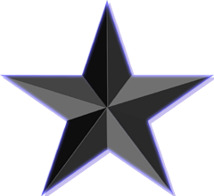

Laboratorio 12
Lab 12.1 - Ejemplo de Transición en CSS con una etiqueta A
Lab 12.2 - Animando una Etiqueta DIV con 6 Keyframes
CSS
DesSoft V
Lab 12.3 - Transformando un DIV Trasladándo a una Área cercana
original
Después del método translate
Lab 12.4 - Transformando un DIV con una Imagen Rotate3D
Antes de Rotar:

Después de Rotar:
Lab 12.5 - Transformando un DIV con una Imagen con Scale3D
Antes de Escalar:

Después de Escalar:
Lab 12.6 - Transformando un DIV con una imagen Matrix3D
Antes de la Transformación:

Despues de la Transformación:
Lab 12.7 - Transición de una Estrella y Transformándola con un Giro de 360°
Coloca el cursor sobre el objeto para verlo en acción
